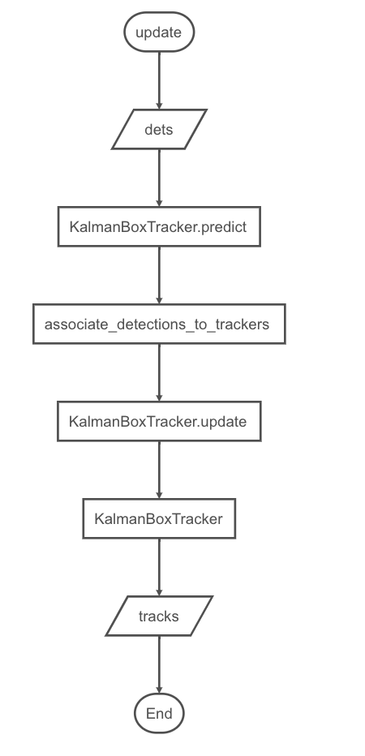

4.7.多目标追踪
学习目标
- 利用sort算法完成多目标追踪
在这里我们主要实现了一个多目标跟踪器，管理多个卡尔曼滤波器对象，主要包括以下内容：
- 初始化：最大检测数，目标未被检测的最大帧数
目标跟踪结果的更新，即跟踪成功和失败的目标的更新
初始化
def __init__(self, max_age=1, min_hits=3): """ 初始化：设置SORT算法的关键参数 """ # 最大检测数：目标未被检测到的帧数，超过之后会被删 self.max_age = max_age # 目标命中的最小次数，小于该次数不返回 self.min_hits = min_hits # 卡尔曼跟踪器 self.trackers = [] # 帧计数 self.frame_count = 0
目标跟踪结果的更新:
该方法实现了SORT算法，输入是当前帧中所有物体的检测框的集合，包括目标的score，输出是当前帧标的跟踪框集合，包括目标的跟踪的id要求是即使检测框为空，也必须对每一帧调用此方法，返回一个类似的输出数组，最后一列是目标对像的id。需要注意的是，返回的目标对象数量可能与检测框的数量不同.

def update(self, dets): self.frame_count += 1 # 在当前帧逐个预测轨迹位置，记录状态异常的跟踪器索引 # 根据当前所有的卡尔曼跟踪器个数（即上一帧中跟踪的目标个数）创建二维数组：行号为卡尔曼滤波器的标识索引，列向量为跟踪框的位置和ID trks = np.zeros((len(self.trackers), 5)) # 存储跟踪器的预测 to_del = [] # 存储要删除的目标框 ret = [] # 存储要返回的追踪目标框 # 循环遍历卡尔曼跟踪器列表 for t, trk in enumerate(trks): # 使用卡尔曼跟踪器t产生对应目标的跟踪框 pos = self.trackers[t].predict()[0] # 遍历完成后，trk中存储了上一帧中跟踪的目标的预测跟踪框 trk[:] = [pos[0], pos[1], pos[2], pos[3], 0] # 如果跟踪框中包含空值则将该跟踪框添加到要删除的列表中 if np.any(np.isnan(pos)): to_del.append(t) # numpy.ma.masked_invalid 屏蔽出现无效值的数组（NaN 或 inf） # numpy.ma.compress_rows 压缩包含掩码值的2-D 数组的整行，将包含掩码值的整行去除 # trks中存储了上一帧中跟踪的目标并且在当前帧中的预测跟踪框 trks = np.ma.compress_rows(np.ma.masked_invalid(trks)) # 逆向删除异常的跟踪器，防止破坏索引 for t in reversed(to_del): self.trackers.pop(t) # 将目标检测框与卡尔曼滤波器预测的跟踪框关联获取跟踪成功的目标，新增的目标，离开画面的目标 matched, unmatched_dets, unmatched_trks = associate_detections_to_trackers(dets, trks) # 将跟踪成功的目标框更新到对应的卡尔曼滤波器 for t, trk in enumerate(self.trackers): if t not in unmatched_trks: d = matched[np.where(matched[:, 1] == t)[0], 0] # 使用观测的边界框更新状态向量 trk.update(dets[d, :][0]) # 为新增的目标创建新的卡尔曼滤波器对象进行跟踪 for i in unmatched_dets: trk = KalmanBoxTracker(dets[i, :]) self.trackers.append(trk) # 自后向前遍历，仅返回在当前帧出现且命中周期大于self.min_hits（除非跟踪刚开始）的跟踪结果；如果未命中时间大于self.max_age则删除跟踪器。 # hit_streak忽略目标初始的若干帧 i = len(self.trackers) for trk in reversed(self.trackers): # 返回当前边界框的估计值 d = trk.get_state()[0] # 跟踪成功目标的box与id放入ret列表中 if (trk.time_since_update < 1) and (trk.hit_streak >= self.min_hits or self.frame_count <= self.min_hits): ret.append(np.concatenate((d, [trk.id + 1])).reshape(1, -1)) # +1 as MOT benchmark requires positive i -= 1 # 跟踪失败或离开画面的目标从卡尔曼跟踪器中删除 if trk.time_since_update > self.max_age: self.trackers.pop(i) # 返回当前画面中所有目标的box与id,以二维矩阵形式返回 if len(ret) > 0: return np.concatenate(ret) return np.empty((0, 5))我们将上述两个方法封装在一个类中。
总结
了解sort进行多目标跟踪的实现